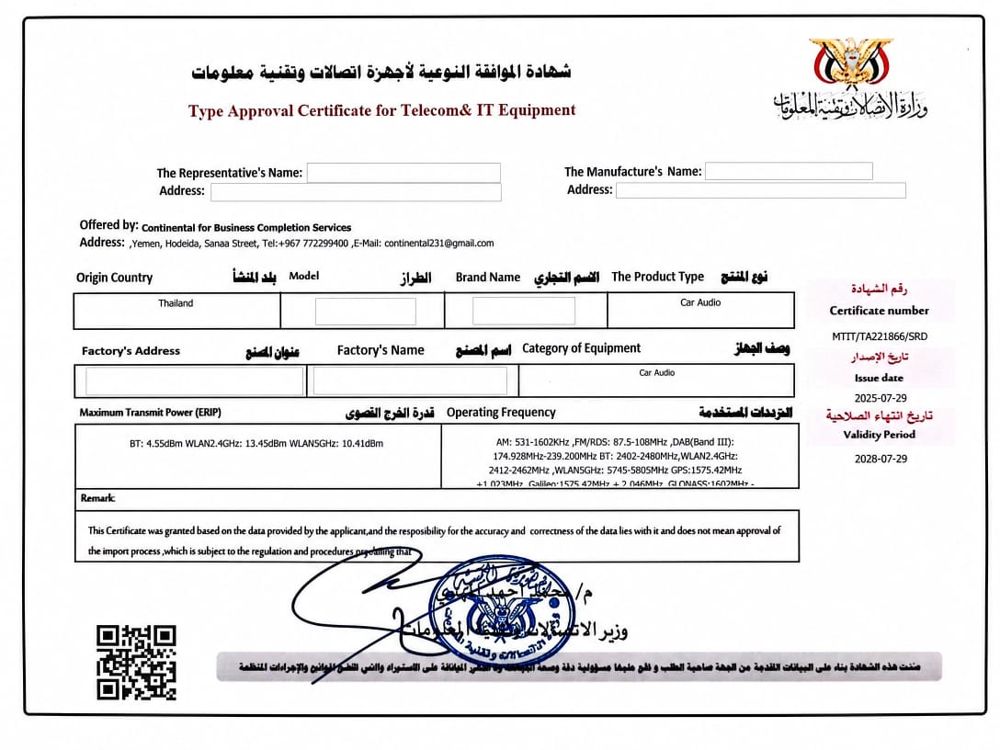

الموافقة النوعية
تجهيز ومتابعة طلبات اعتماد أجهزة الاتصالات وتقنية المعلومات لدى الجهات المختصة.
الخدمات
تجهيز ومتابعة طلبات اعتماد أجهزة الاتصالات وتقنية المعلومات لدى الجهات المختصة.
مراجعة المواصفات الفنية، الترددات، تقارير الاختبار، ومتطلبات الوثائق قبل التقديم.
تنسيق المستندات، النماذج، التفويضات، والفواتير لضمان ملف متكامل وسهل المتابعة.
إرشاد المصنعين والموردين حول المسار الأنسب لتسريع الوصول إلى السوق اليمني والإقليمي.
نموذج الشهادة
نساعدك على فهم بيانات الشهادة، مطابقة المنتج، وإكمال التفاصيل الفنية المطلوبة مثل نوع المنتج، الطراز، الترددات، بلد المنشأ، وتقارير الاختبار.
